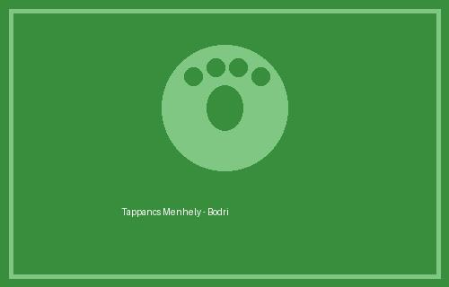
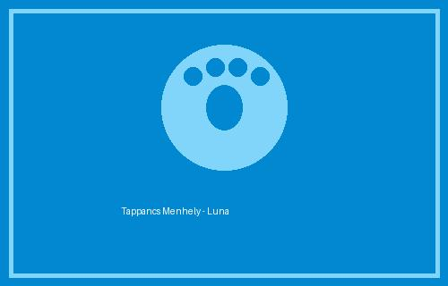

Üdvözlünk a menhelyünk oldalán!
Menhelyünk több mint 10 éve foglalkozik árva kutyák és macskák mentésével, gyógyításával és gazdihoz juttatásával.
Miért válassz minket?
- Minden állatunk oltva és chippelve van.
- Ingyenes kutyaiskolai tanácsadást biztosítunk.
- Orvosi garanciát vállalunk a védenceinkre.
Az örökbefogadás menete
- Válaszd ki a szimpatikus kisállatot az Állataink menüpontban.
- Töltsd ki az online jelentkezési űrlapot.
- Látogass el hozzánk egy személyes találkozóra.
- Írd alá az örökbefogadási szerződést, és vidd haza új barátodat!
Menhelyünk életképekben

